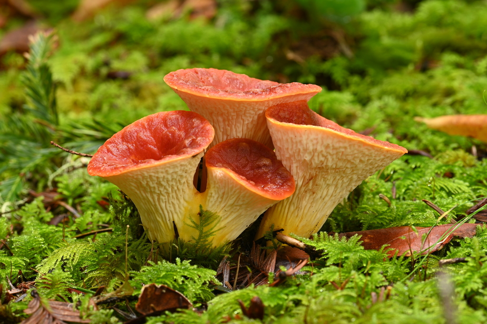

Turbinellus floccosus
Turbinellus floccosus, commonly known as the scaly vase, or sometimes the shaggy, scaly, or woolly chanterelle, is a cantharelloid mushroom of the family Gomphaceae. It was known as Gomphus floccosus until 2011, when it was found to be only distantly related to the genus's type species, G. clavatus.
Toxicity. Turbinellus floccosus is poisonous to some people who eat it, but has been consumed without incident by others. Nausea, vomiting and diarrhea may occur, though are sometimes delayed by up to 8–14 hours.
Despite its toxicity, T. floccosus is one of the ten wild mushrooms most widely consumed by ethnic tribes in Meghalaya, northeast India,[39] and is highly regarded by the Sherpa people in the vicinity of Sagarmatha National Park in Nepal.[21] What is not known is whether the Indian populations of T. floccosus are nontoxic, or whether the local people have developed an immunity to it.[40] It is also enjoyed in Mexico.[23] American mycologist David Arora reported that some enjoyed it while he felt it had a strong sour taste.